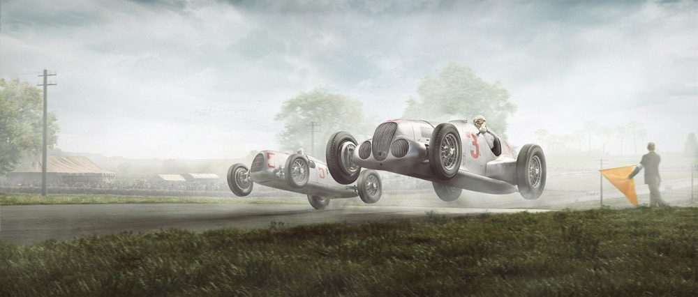

Introduction
The History of Motorsport and in this case grand prix racing is filled with triumph, tragedy and legendary moments in the sport. Historians will say that one of the most famous stories as that of the domination of the mid 1930s German Silver Arrows of Mercedes and Auto Union. The name comes from the color of each of the cars which was considered Germany's national color. This was the term that a news reporter refered to and since then has became legend. Although this name is synonomus with spectacular racing and some of the most powerful cars ever built at the team. its history has been tarnished by its involvement with Nazi Germany. The story from the beginning was filled with controversy.

Origins
The story of the silver arrow name came about during the first race of the 1934 season. The Mercedes car the W25 was weighed before the race took place. The new rules of the season called for a max weight of 750 kg. The mercedes weighed just over the weight limit and therefor would not be allowed to start. The Mercedes team manager Alfred Neubauer came up with a plan to strip the Mercedes car of the paint down to the base filler. When the car was weighed again it weighd 750 kg and was allowed to race. The Auto Union cars were made with aluminum so they were silver to begin with. A German news reporter refered to the new cars as "Silberpfeil" which translates as Silver Arrow. The name stuck and has become a legend of Grand Prix Racing.
Lost in the Battle
The last Race for the Silver Arrows was at Belgrade in 1939. Earlier that year Germany invaded Poland and Britain declared war on Germany. In a flash, motor racing was halted as Europe dove into War that would last 6 years. The factories that produced these amazing machines were ordered to start prepairing for war manufacturing. The race cars whent into hiding and became legend over night. With Germany's defeat at the end of the war, Soviet Forces stumbled upon the Auto Union cars hidin in a mine and took the cars as reparations of war. Most of the Auto Union Cars would never drive again. The Soviets took them as research and some were dismantled and scrapped. Only a few have been recovered and had even gone to be sold at auction. The Cars went unsold but it's speculated these cars could be worth more than $12 million.
Find out more by visiting Wikipedia or Grand Prix History.